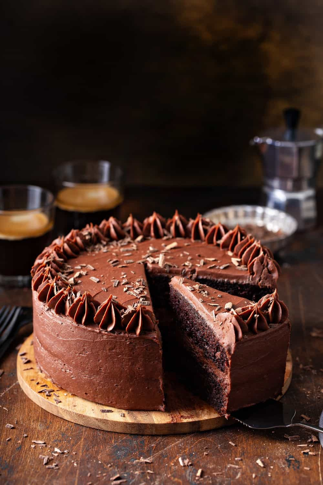

How to Bake a Chocolate Cake
Ingridients:

- 1 3/4 cups loosely packed dark brown sugar
- Scant 3 3/4 cups all-purpose flour
- 1/2 cup (1 stick) unsalted butter
- 3/4 cup whole milk
Instructions:
- Add the brown sugar to the flour, and mix together until well combined.
- Heat the butter and milk together over medium-low heat, stirring until the milk is very warm and the butter begins to melt. Remove from the heat, and set aside to cool to lukewarm.
- By hand, work the butter and milk into the flour and sugar, kneading until well combined. Continue to knead until the ingredients are thoroughly incorporated and the dough is smooth. Shape into a ball, wrap in plastic wrap, and refrigerate for at least 1 hour.
- Position a rack in the upper third of the oven. Preheat the oven to 375°F. Grease large baking sheets with vegetable shortening.
- Divide the dough into thirds, and roll out on a lightly floured surface to about 1/4 inch thick. Cut into 1-by-3-inch strips, and place 1 to 1 1/2 inches apart on the prepared baking sheets.
- Bake the cakes for 8 to 9 minutes, or until they are lightly browned on the bottoms. With a spatula, immediately transfer them to wire racks and cool completely.
- Store the cakes for up to 3 days in airtight containers